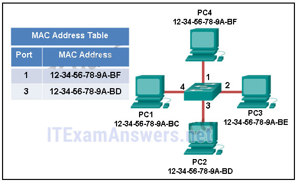
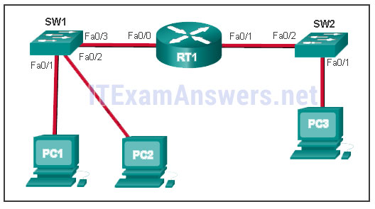
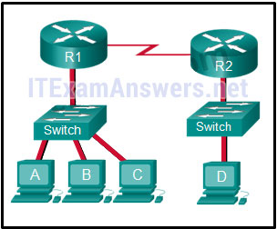
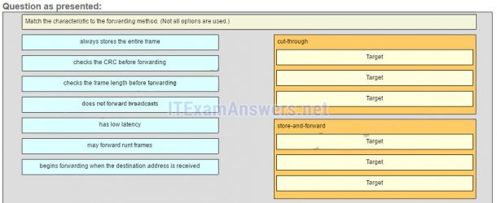
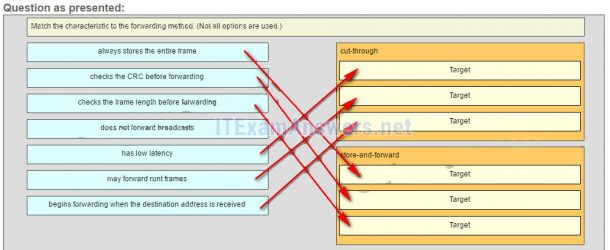
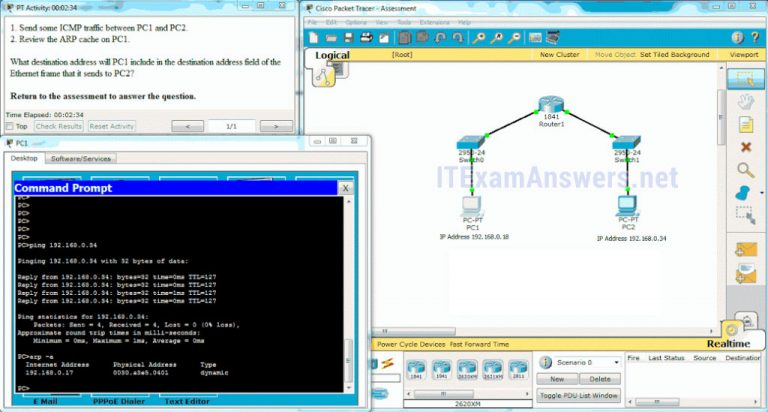
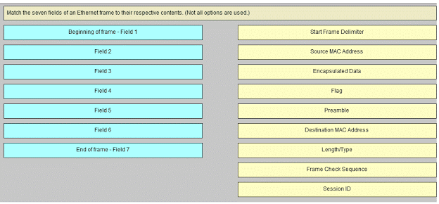
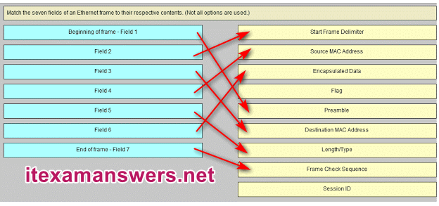

1.¿Qué sucede con las tramas runt recibidas por un conmutador Cisco Ethernet?
- El marco se ha caído. *
- El marco se devuelve al dispositivo de red de origen.
- El marco se transmite a todos los demás dispositivos en la misma red.
- El marco se envía a la puerta de enlace predeterminada.
- @javi__super
Explicación:
en un intento por conservar el ancho de banda y no reenviar tramas inútiles, los dispositivos Ethernet descartan tramas que se consideran runt (menos de 64 bytes) o jumbo (más de 1500 bytes).
2.¿Cuáles son los dos tamaños (mínimo y máximo) de un marco Ethernet? (Escoge dos.)
- 64 bytes *
- 56 bytes
- 1518 bytes *
- 1024 bytes
- @javi__super
Explique:
La trama de Ethernet mínima es de 64 bytes. La trama máxima de Ethernet es de 1518 bytes. Un técnico de red debe conocer el tamaño mínimo y máximo de trama para reconocer las tramas runt y jumbo.
3.¿Qué afirmación describe a Ethernet?
- Define el tipo de LAN más común en el mundo. *
- Es el estándar requerido de Capa 1 y 2 para la comunicación por Internet.
- Define un modelo estándar utilizado para describir cómo funciona la red.
- Conecta múltiples sitios como enrutadores ubicados en diferentes países.
- @javi__super
Explique:
Ethernet es el protocolo LAN más común en el mundo. Funciona en las capas 1 y 2, pero no es necesario para la comunicación por Internet. El modelo OSI se utiliza para describir cómo funcionan las redes. Una WAN conecta múltiples sitios ubicados en diferentes países.
4.¿Qué dos afirmaciones describen las características o funciones de la subcapa de control de enlace lógico en los estándares de Ethernet? (Escoge dos.)
- El control de enlace lógico se implementa en el software. *
- El control de enlace lógico se especifica en el estándar IEEE 802.3.
- La subcapa LLC agrega un encabezado y un tráiler a los datos.
- La capa de enlace de datos utiliza LLC para comunicarse con las capas superiores del conjunto de protocolos. *
- @javi__super
Explique:
el
control de enlace lógico se implementa en el software y permite que la capa de enlace de datos se comunique con las capas superiores del conjunto de protocolos. El control de enlace lógico se especifica en el estándar IEEE 802.2. IEEE 802.3 es un conjunto de estándares que definen los diferentes tipos de Ethernet. La subcapa MAC (Control de acceso a los medios) es responsable de la colocación y recuperación de los marcos dentro y fuera de los medios. La subcapa MAC también es responsable de agregar un encabezado y un tráiler a la unidad de datos de protocolo de capa de red (PDU).
5.¿Qué afirmación describe una característica de las direcciones MAC?
- Deben ser globalmente únicos. *
- Solo son enrutables dentro de la red privada.
- Se agregan como parte de una PDU de capa 3.
- Tienen un valor binario de 32 bits.
- @javi__super
Explique:
cualquier proveedor que venda dispositivos Ethernet debe registrarse en el IEEE para asegurarse de que se le asigna un código único de 24 bits, que se convierte en los primeros 24 bits de la dirección MAC. Los últimos 24 bits de la dirección MAC se generan por dispositivo de hardware. Esto ayuda a garantizar direcciones únicas a nivel mundial para cada dispositivo Ethernet.
6.¿Qué afirmación es cierta acerca de las direcciones MAC?
- Los primeros tres bytes son utilizados por el proveedor asignado OUI. *
- Las direcciones MAC son implementadas por software.
- Una NIC solo necesita una dirección MAC si está conectada a una WAN.
- La ISO es responsable de las regulaciones de direcciones MAC.
- @javi__super
Explique:
Una dirección MAC está compuesta de 6 bytes. Los primeros 3 bytes se usan para la identificación del proveedor y los últimos 3 bytes deben tener asignado un valor único dentro del mismo OUI. Las direcciones MAC se implementan en hardware. Una NIC necesita una dirección MAC para comunicarse a través de la LAN. El IEEE regula las direcciones MAC.
7.¿Qué dirección de destino se utiliza en un marco de solicitud ARP?
- FFFF.FFFF.FFFF *
- 0.0.0.0
- 255.255.255.255
- 127.0.0.1
- @javi__super
Explique:
El propósito de una solicitud ARP es encontrar la dirección MAC del host de destino en una LAN Ethernet. El proceso ARP envía una transmisión de Capa 2 a todos los dispositivos en la LAN Ethernet. La trama contiene la dirección IP del destino y la dirección MAC de difusión, FFFF.FFFF.FFFF.
8.¿Qué información de direccionamiento registra un conmutador para construir su tabla de direcciones MAC?
- la dirección de la capa 2 de origen de las tramas entrantes *
- la dirección de destino de la capa 3 de los paquetes entrantes
- la dirección de destino de la Capa 2 de los cuadros salientes
- la dirección de la capa 3 de origen de los paquetes salientes
- @javi__super
Explicación:
un conmutador crea una tabla de direcciones MAC al inspeccionar los marcos entrantes de la Capa 2 y al registrar la dirección MAC de origen que se encuentra en el encabezado del marco. La dirección MAC descubierta y grabada se asocia con el puerto utilizado para recibir la trama.
9.Consulte la presentación. La exposición muestra una pequeña red conmutada y el contenido de la tabla de direcciones MAC del conmutador. PC1 ha enviado un marco dirigido a PC3. ¿Qué hará el interruptor con el marco?

- El conmutador reenviará el marco a todos los puertos excepto el puerto 4. *
- El interruptor desechará el marco.
- El interruptor reenviará el marco solo al puerto 2.
- El interruptor reenviará el marco a todos los puertos.
- @javi__super
Explique:
la dirección MAC de PC3 no está presente en la tabla MAC del conmutador. Debido a que el conmutador no sabe dónde enviar la trama dirigida a PC3, la enviará a todos los puertos del conmutador, excepto el puerto 4, que es el puerto entrante.
10.¿Qué método de conmutación utiliza el valor CRC en una trama?
- almacenamiento y reenvio *
- corte a través
- avance rápido
- libre de fragmentos
- @javi__super
Explicación:
cuando se utiliza el método de conmutación de almacenamiento y envío, el conmutador recibe la trama completa antes de reenviarla al destino. La parte de la verificación de redundancia cíclica (CRC) del tráiler se usa para determinar si la trama se ha modificado durante el tránsito. Por el contrario, un interruptor de corte directo reenvía la trama una vez que se lee la dirección de la Capa 2 de destino. Dos tipos de métodos de conmutación por corte son de avance rápido y sin fragmentos.
11.¿Qué es auto-MDIX?
- una característica que detecta el tipo de cable Ethernet *
- un tipo de puerto en un switch Cisco
- un tipo de conmutador Cisco
- un tipo de conector Ethernet
- @javi__super
Explique:
Auto-MDIX es una función que está habilitada en los últimos switches Cisco y que permite que el switch detecte y use cualquier tipo de cable conectado a un puerto específico.
12.Consulte la presentación. PC1 emite una solicitud ARP porque necesita enviar un paquete a PC2. En este escenario, ¿qué pasará después?

- PC2 enviará una respuesta ARP con su dirección MAC. *
- RT1 enviará una respuesta ARP con su dirección MAC Fa0 / 0.
- RT1 enviará una respuesta ARP con la dirección MAC de PC2.
- SW1 enviará una respuesta ARP con la dirección MAC de PC2.
- @javi__super
Explicar:
cuando un dispositivo de red desea comunicarse con otro dispositivo en la misma red, envía una solicitud ARP de difusión. En este caso, la solicitud contendrá la dirección IP de PC2. El dispositivo de destino (PC2) envía una respuesta ARP con su dirección MAC.
13.¿Cuál es el objetivo de un ataque de suplantación ARP?
- para asociar direcciones IP a la dirección MAC incorrecta *
- para abrumar a los hosts de la red con solicitudes ARP
- inundar la red con transmisiones de respuesta ARP
- para rellenar las tablas de direcciones MAC del interruptor con direcciones falsas
- @javi__super
14.¿Cuál es una característica del almacenamiento en búfer basado en puerto?
- Los marcos se almacenan en búfer en colas vinculadas a puertos específicos. *
- Los marcos en el búfer de memoria están vinculados dinámicamente a los puertos de destino.
- Todos los cuadros se almacenan en un búfer de memoria común.
- Todos los puertos en un switch comparten un solo buffer de memoria.
- @javi__super
Explique:
el almacenamiento en búfer es una técnica utilizada por los conmutadores de Ethernet para almacenar marcos hasta que se puedan transmitir. Con el almacenamiento en búfer basado en puertos, los marcos se almacenan en colas que están vinculadas a puertos entrantes y salientes específicos.
15.¿Cuál es el tamaño mínimo de trama Ethernet que el receptor no descartará como trama runt?
- 64 bytes *
- 512 bytes
- 1024 bytes
- 1500 bytes
- @javi__super
16.¿Cuáles son los dos problemas potenciales de la red que pueden resultar de la operación ARP? (Escoge dos.)
- En redes grandes con poco ancho de banda, las transmisiones múltiples de ARP podrían causar retrasos en la comunicación de datos. *
- Los atacantes de red podrían manipular la dirección MAC y las asignaciones de direcciones IP en los mensajes ARP con la intención de interceptar el tráfico de red. *
- La configuración manual de las asociaciones ARP estáticas podría facilitar el envenenamiento ARP o la falsificación de direcciones MAC.
- Un gran número de difusiones de solicitudes de ARP podrían provocar el desbordamiento de la tabla de direcciones MAC del host e impedir que el host se comunique en la red.
- @javi__super
Explique:
Un gran número de mensajes de difusión de ARP podrían causar retrasos momentáneos en las comunicaciones de datos. Los atacantes de red podrían manipular la dirección MAC y las asignaciones de direcciones IP en los mensajes ARP con la intención de interceptar el tráfico de red. Las solicitudes y respuestas de ARP hacen que las entradas se realicen en la tabla ARP, no en la tabla de direcciones MAC. Los desbordamientos de la tabla ARP son muy improbables. La configuración manual de las asociaciones ARP estáticas es una forma de prevenir, no facilitar, el envenenamiento ARP y la suplantación de direcciones MAC. Para las operaciones normales de reenvío de trama del conmutador se requieren múltiples respuestas ARP que den como resultado que la tabla de direcciones MAC del switch contenga entradas que coincidan con las direcciones MAC de los nodos conectados y que estén asociadas con el puerto del switch correspondiente. No es un problema de red causado por ARP.
17.Rellena el espacio en blanco.
- Un fragmento de colisión, también conocido como RUNT trama , es una trama de menos de 64 bytes de longitud.
- @javi__super
Explicar:
una trama runt es una trama de menos de 64 bytes, generalmente generada por una colisión o un fallo de la interfaz de red.
18.Rellena el espacio en blanco.
- En un switch Cisco, basado en puerto almacenamiento en búfer de memoria se utiliza para almacenar tramas en colas vinculadas a puertos de entrada y salida específicos.
- @javi__super
19.Rellena el espacio en blanco.
- FalsificaciónARP es una técnica que se utiliza para enviar mensajes falsos de ARP a otros hosts en la LAN. El objetivo es asociar las direcciones IP a las direcciones MAC incorrectas.
- @javi__super
Explique:
la
suplantación de ARP o el envenenamiento de ARP es una técnica utilizada por un atacante para responder a una solicitud de ARP de una dirección IPv4 que pertenece a otro dispositivo, como la puerta de enlace predeterminada.
20.¿Qué declaración describe el tratamiento de las solicitudes de ARP en el enlace local?
- Todos los dispositivos en la red local los reciben y los procesan. *
- Deben ser reenviados por todos los enrutadores en la red local.
- Todos los conmutadores de la red local los eliminan.
Son recibidos y procesados solo por el dispositivo de destino.
- Ca
- @javi__super
21.Consulte la presentación. Los interruptores están en su configuración por defecto. El host A necesita comunicarse con el host D, pero el host A no tiene la dirección MAC para su puerta de enlace predeterminada. ¿Qué hosts de red recibirán la solicitud ARP enviada por el host A?

- solo host D solo enrutador R1 solo host A, B y C solo host A, B, C y D solo host B y C solo host B, C y enrutador R1 *
- @javi__super
Explicación:
como el host A no tiene la dirección MAC de la puerta de enlace predeterminada en su tabla ARP, el host A envía una difusión ARP. La transmisión ARP se enviaría a todos los dispositivos de la red local. Los hosts B, C y el enrutador R1 recibirán la transmisión. El enrutador R1 no reenvía el mensaje.
22.Consulte la presentación. Un conmutador con una configuración por defecto conecta cuatro hosts. Se muestra la tabla ARP para el host A ¿Qué sucede cuando el host A quiere enviar un paquete IP al host D?
- El host A envía una solicitud ARP a la dirección MAC del host D. El host D envía una solicitud ARP al host A. El host A envía el paquete al conmutador. El conmutador envía el paquete solo al host D, que a su vez responde.
- Host A envía una emisión de FF: FF: FF: FF: FF: FF. Todos los demás hosts conectados al conmutador reciben la transmisión y el host D responde con su dirección MAC. *
- @javi__super
Explique:
siempre que la dirección MAC de destino no esté contenida en la tabla ARP del host de origen, el host (host A en este ejemplo) enviará una difusión de Capa 2 que tiene una dirección MAC de destino de FF: FF: FF: FF: FF : FF. Todos los dispositivos en la misma red reciben esta transmisión. El anfitrión D responderá a esta transmisión.
23.¿Verdadero o falso?
Cuando un dispositivo está enviando datos a otro dispositivo en una red remota, el marco de Ethernet se envía a la dirección MAC de la puerta de enlace predeterminada.
- cierto *
- falso
- @javi__super
Explique:
una dirección MAC solo es útil en la red Ethernet local. Cuando los datos se destinan a una red remota de cualquier tipo, los datos se envían al dispositivo de puerta de enlace predeterminado, el dispositivo de Capa 3 que se enruta a la red local.
24.La tabla ARP en un conmutador asigna dos tipos de direcciones juntas.
- Dirección de la capa 3 a una dirección de la capa 2 *
- Dirección de la *
- capa 4 a una dirección de la capa 2
- capa 2 a dirección de capa 4
- @javi__super
Explicación:
la
tabla ARP del conmutador mantiene una asignación de direcciones MAC de capa 2 a direcciones IP de capa 3. Estas asignaciones se pueden aprender mediante el cambio de forma dinámica a través de ARP o estáticamente a través de la configuración manual.
25.Empareja la característica con el método de reenvío. (No se utilizan todas las opciones).
- Pregunta

- Respuesta

- @javi__super
Explicación:
un interruptor de almacenamiento y reenvío siempre almacena todo el cuadro antes de reenviarlo y comprueba su CRC y la longitud del cuadro. Un interruptor de corte puede reenviar tramas antes de recibir el campo de dirección de destino, por lo que presenta menos latencia que un interruptor de almacenamiento y reenvío. Debido a que la trama puede comenzar a reenviarse antes de que se reciba completamente, el conmutador puede transmitir una trama corrupta o runt. Todos los métodos de reenvío requieren un interruptor de Capa 2 para reenviar tramas de difusión.
26.¿Cuál es una característica de un método de acceso basado en la contención?
- Es un método no determinista. *
- Procesa más gastos generales que los métodos de acceso controlado.
- Cuenta con mecanismos para rastrear los giros para acceder a los medios.
- Se escala muy bien bajo el uso de medios pesados.
- @javi__super
27.¿Cuál es el propósito del preámbulo en una trama de Ethernet?
- se utiliza para sincronizar el tiempo *
- Se utiliza como relleno para datos.
- se utiliza para identificar la dirección de origen
- se utiliza para identificar la dirección de destino
- @javi__super
28.¿Cuál es la dirección MAC de multidifusión de capa 2 que corresponde a la dirección de multidifusión IPv4 de capa 3 224.139.34.56?
- 01-00-5E-0B-22-38 *
- 00-00-00-0B-22-38
- 01-5E-00-0B-22-38
- FE-80-00-0B-22-38
- @javi__super
29.¿Qué dos afirmaciones son correctas sobre las direcciones MAC e IP durante la transmisión de datos si NAT no está involucrado? (Escoge dos.)
- Las direcciones MAC de origen y destino tienen un significado local y cambian cada vez que una trama va de una LAN a otra. *
- Un paquete que ha cruzado cuatro enrutadores ha cambiado la dirección IP de destino cuatro veces.
- Las direcciones IP de destino en un encabezado de paquete permanecen constantes a lo largo de toda la ruta a un host de destino. *
- Cada vez que se encapsula una trama con una nueva dirección MAC de destino, se necesita una nueva dirección IP de destino.
- @javi__super
30.¿Cuáles son las dos características de ARP? (Escoge dos.)
- Si un host está listo para enviar un paquete a un dispositivo de destino local y tiene la dirección IP pero no la dirección MAC del destino, genera una transmisión ARP. *
- Se envía una solicitud ARP a todos los dispositivos en la LAN Ethernet y contiene la dirección IP del host de destino y su dirección MAC de multidifusión.
- Cuando un host está encapsulando un paquete en una trama, se refiere a la tabla de direcciones MAC para determinar la asignación de direcciones IP a direcciones MAC.
- Si un dispositivo que recibe una solicitud ARP tiene la dirección IPv4 de destino, responde con una respuesta ARP. *
- @javi__super
31.Lanzamiento PT. Ocultar y guardar PT Abrir la actividad PT. Realice las tareas en la instrucción de la actividad y luego responda la pregunta. ¿Qué dirección de destino incluirá PC1 en el campo de dirección de destino de la trama de Ethernet que envía a PC2?

- 0030.a3e5.0401 *
- 00e0.b0be.8014
- 0007.ec35.a5c6
- 192.168.0.17
- @javi__super
32.¿Cómo afecta la adición de una tarjeta de línea Ethernet al factor de forma de un conmutador?
- expandiendo la densidad del puerto *
- aumentando la velocidad de conmutación del plano posterior
- expandiendo la capacidad de la NVRAM
- haciendo el interruptor apilable
- @javi__super
33.¿Qué declaración ilustra un inconveniente del método de acceso CSMA / CD?
- Las colisiones pueden disminuir el rendimiento de la red. *
- Los protocolos deterministas de acceso a los medios ralentizan el rendimiento de la red.
- Las tecnologías CSMA / CD LAN solo están disponibles a velocidades más lentas que otras tecnologías LAN.
- Es más complejo que los protocolos no deterministas.
- @javi__super
34.El número binario 0000 1010 se puede expresar como " A " en hexadecimal.
Haga coincidir los siete campos de un marco Ethernet con sus contenidos respectivos. (No se utilizan todas las opciones).
- Pregunta

- Respuesta

- @javi__super